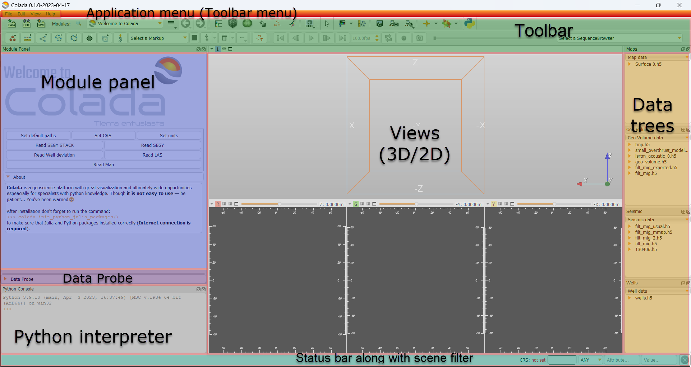

User Interface¶
Application overview¶
Colada stores all loaded data in a data repository, called the “scene” (or Colada scene or MRML scene). Each data set, such as an image volume, surface model, or point set, is represented in the scene as a “node”.
Colada provides a large number “modules”, each implementing a specific set of functions for creating or manipulating data in the scene. Modules typically do not interact with each other directly: they just all operate on the data nodes in the scene.
{kind=link}
Module Panel¶
This panel (located by default on the left side of the application main window) displays all the options and features that the current module offers to the user. Current module can be selected using the Module Selection toolbar.
Data Probe¶
Data Probe is located at the bottom of the module panel. It displays information about view content at the position of the mouse pointer:
Slice view information (displayed when the mouse is over a slice view):
Slice view name:
Red,Green,Yellow, etc.Three coordinate values, prefixed with
+-X,+-Y,+-Z.View orientation:
XY,YZ,XZandReformatfor any other orientation.Slice spacing: distance between slices in this orientation.
Volume layer information: three lines, one for each volume layer
Layer type:
L(label),F(foreground),B(background).Volume name, or
Noneif no volume is selected for that layer.Volume voxel (IJK) coordinates.
Voxel value. For label volumes the label name corresponding to the voxel value is also displayed.
Segmentation information: for each segmentation visible at that position
Layer type:
S(segmentation)Segmentation name.
Segment names. Multiple segment names are listed if multiple segments are displayed at that position (the segments overlap).
Views¶
Colada displays data in various views. The user can choose between a number of predefined layouts, which may contain slice, 3D, chart, and table views.
The Layout Toolbar provides a drop-down menu of layouts useful for many types of studies. When Colada is exited normally, the selected layout is saved and restored next time the application is started.
Toolbar¶
Toolbar provides quick access to commonly used functions. Individual toolbar panels can be shown/hidden using menu: View / Toolbars section.
Module Selection toolbar is used for selecting the currently active “module”. The toolbar provides options for searching for module names (Ctrl + f or click on magnify glass icon) or selecting from a menu. Module history dropdown button shows the list of recently used modules. Arrow buttons can be used for going back to/returning from previously used module.
Favorite modules toolbar contains a list of most frequently used modules. The list can be customized using menu: Edit / Application settings / Modules / Favorite Modules. drag&drop modules from the Modules list to the Favorite Modules list to add a module.
Status bar¶
This panel may display application status, such as current operation in progress. Clicking the little X icons displays the Error Log window.
Data trees¶
Data trees are dedicated to work with geological data.
Clicking on checkbox makes this data visible in Data module and thus can be viewed on the views.
Right click on items invokes pop-up menu with allowed actions on selected items.
Right click on tree header also invokes pop-up menu with different actions available.
Scene filter¶
Scene filter may be used to filter (hide) nodes whoose attribute’s value doesn’t match the value in the input line.
The same can be done by setting Domain in the combo box.
Node attributes can be viewed in Data module.
Mouse & Keyboard Shortcuts¶
Generic shortcuts¶
| Shortcut | Operation |
|---|---|
Ctrl + f |
find module by name (hit Enter to select) |
Ctrl + o |
add data from file |
Ctrl + s |
save data to files |
Ctrl + w |
close scene |
Ctrl + 0 |
show Error Log |
Ctrl + 1 |
show Application Help |
Ctrl + 2 |
show Application Settings |
Ctrl + 3 / Ctrl + ` |
show/hide Python Console |
Ctrl + 4 |
show Extensions Manager |
Ctrl + 5 |
show/hide Module Panel |
Ctrl + h |
open default startup module (configurable in Application Settings) |
Slice views¶
The following shortcuts are available when a slice view is active. To
activate a view, click inside the view: if you do not want to change
anything in the view, just activate it then do right-click without
moving the mouse. Note that simply hovering over the mouse over a slice
view will not activate the view.
| Shortcut | Operation |
|---|---|
right-click + drag up/down |
zoom image in/out |
Ctrl + mouse wheel |
zoom image in/out |
middle-click + drag |
pan (translate) view |
Shift + left-click + drag |
pan (translate) view |
left arrow / right arrow |
move to previous/next slice |
b / f |
move to previous/next slice |
Shift + mouse move |
move crosshair in all views |
Ctrl + Alt + left-click + drag |
rotate slice intersection of other views (Slice intersections must be enabled in Crosshair selection toolbar) |
v |
toggle slice visibility in 3D view |
r |
reset zoom and pan to default |
g |
toggle segmentation or labelmap volume |
t |
toggle foreground volume visibility |
[ / ] |
use previous/next volume as background |
{ / } |
use previous/next volume as foreground |
left-double-click |
maximize view/restore view layout |
3D views¶
The following shortcuts are available when a 3D view is active. To
activate a view, click inside the view: if you do not want to change
anything in the view, just activate it then do right-click without
moving the mouse. Note that simply hovering over the mouse over a slice
view will not activate the view.
| Shortcut | Operation |
|---|---|
Shift + mouse move |
move crosshair in all views |
left-click + drag |
rotate view |
left arrow / right arrow |
rotate view |
up arrow / down arrow |
rotate view |
End or Keypad 1 |
rotate to view from anterior |
Shift + End or Shift + Keypad 1 |
rotate to view from posterior |
Page Down or Keypad 3 |
rotate to view from left side |
Shift + Page Down or Shift + Keypad 3 |
rotate to view from right side |
Home or Keypad 7 |
rotate to view from superior |
Shift + Home or Shift + Keypad 7 |
rotate to view from inferior |
right-click + drag up/down |
zoom view in/out |
Ctrl + mouse wheel |
zoom view in/out |
Ctrl + b |
toggle tilt lock |
+ / - |
zoom view in/out |
middle-click + drag |
pan (translate) view |
Shift + left-click + drag |
pan (translate) view |
Shift + left arrow / Shift + right arrow |
pan (translate) view |
Shift + up arrow / Shift + down arrow |
pan (translate) view |
Shift + Keypad 2 / Shift + Keypad 4 |
pan (translate) view |
Shift + Keypad 6 / Shift + Keypad 8 |
pan (translate) view |
Keypad 0 or Insert |
reset zoom and pan, rotate to nearest standard view |
left-double-click |
maximize view/restore view layout |
Note: Simulation if shortcuts not available on your device:
One-button mouse: instead of
right-clickdoCtrl+clickTrackpad: instead of
right-clickdotwo-finger click
Python console¶
The following shortcuts are available in the Python console.
| Shortcut | Operation |
|---|---|
Tab |
auto-complete |
up arrow / down arrow |
command history |
Esc |
clear selection, return to current command line, clear current command line |
Ctrl + g |
run Python script from a file |
Ctrl + v |
paste Python script from clipboard and run it |
Note that when code is pasted into an empty line then all the code in the clipboard is executed at once. If the current command line is not empty then the code from the clipboard is pasted into the console and executed line by line. When code is executed line by line, the behavior is different in that an empty input line immediately closes the current block, and output is printed after executing each line.